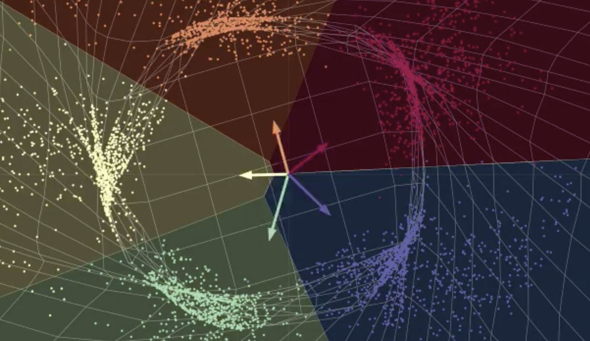

import pandas as pdSome Data Analysis about Congress
model-comparison
congress
How to sitting president’s parties do with congress?

tbl = pd.read_html("https://www.presidency.ucsb.edu/statistics/data/seats-congress-gainedlost-the-presidents-party-mid-term-elections")df = tbl[0]
df.columns = df.columns.to_flat_index()
df| (Unnamed: 0_level_0, Year) | (Unnamed: 1_level_0, Lame Duck?) | (Unnamed: 2_level_0, President) | (Unnamed: 3_level_0, President'sParty) | (President's Job Approval Percentage (Gallup) As of:, Early Aug) | (President's Job Approval Percentage (Gallup) As of:, Late Aug) | (President's Job Approval Percentage (Gallup) As of:, Early Sep) | (President's Job Approval Percentage (Gallup) As of:, Late Sep) | (President's Job Approval Percentage (Gallup) As of:, Early Oct) | (President's Job Approval Percentage (Gallup) As of:, Late Oct) | (President's Party, House Seatsto Defend) | (President's Party, Senate Seatsto Defend) | (Seat Change, President's Party, House Seats) | (Seat Change, President's Party, Senate Seats) | |
|---|---|---|---|---|---|---|---|---|---|---|---|---|---|---|
| 0 | 1934 | NaN | Franklin D. Roosevelt | D | -- | -- | -- | -- | -- | -- | 313 | 14 | +9 | +9 |
| 1 | 1938 | NaN | Franklin D. Roosevelt | D | -- | -- | -- | -- | -- | 60 | 334 | 27 | -81 | -7 |
| 2 | 1942 | NaN | Franklin D. Roosevelt | D | 74 | -- | 74 | -- | -- | -- | 267 | 25 | -46 | -9 |
| 3 | 1946 | NaN | Harry S. Truman | D | -- | -- | 33 | -- | -- | 27 | 244 | 21 | -45 | -12 |
| 4 | 1950 | LD* | Harry S. Truman | D | nd | 43 | 35 | 35 | 43 | 41 | 263 | 21 | -29 | -6 |
| 5 | 1954 | NaN | Dwight D. Eisenhower | R | 67 | 62 | -- | 66 | 62 | -- | 221 | 11 | -18 | -1 |
| 6 | 1958 | LD | Dwight D. Eisenhower | R | 58 | 56 | 56 | 54 | 57 | -- | 203 | 20 | -48 | -13 |
| 7 | 1962 | NaN | John F. Kennedy | D | -- | 67 | -- | 63 | -- | 61 | 264 | 18 | -4 | +3 |
| 8 | 1966 | † | Lyndon B. Johnson | D | 51 | 47 | -- | -- | 44 | 44 | 295 | 21 | -47 | -4 |
| 9 | 1970 | NaN | Richard Nixon | R | 55 | 55 | 57 | 51 | 58 | -- | 192 | 7 | -12 | +2 |
| 10 | 1974 | ± | Gerald R. Ford (Nixon) | R | 71 | -- | 66 | 50 | 53 | -- | 192 | 15 | -48 | -5 |
| 11 | 1978 | NaN | Jimmy Carter | D | 43 | 43 | 48 | -- | 49 | 45 | 292 | 14 | -15 | -3 |
| 12 | 1982 | NaN | Ronald Reagan | R | 41 | 42 | -- | 42 | -- | 42 | 192 | 12 | -26 | +1 |
| 13 | 1986 | LD | Ronald Reagan | R | -- | 64 | -- | 63 | 64 | -- | 181 | 22 | -5 | -8 |
| 14 | 1990 | NaN | George Bush | R | 75 | 73 | 54 | -- | -- | 57 | 175 | 17 | -8 | -1 |
| 15 | 1994 | NaN | William J. Clinton | D | 43 | 40 | 40 | 44 | 43 | 48 | 258 | 17 | -52 | -8 |
| 16 | 1998 | LD | William J. Clinton | D | 65 | 62 | 63 | 66 | 65 | 65 | 207 | 18 | +5 | 0 |
| 17 | 2002 | NaN | George W. Bush | R | -- | 66 | 66 | 66 | 68 | 67 | 220 | 20 | +8 | +2 |
| 18 | 2006 | LD | George W. Bush | R | 37 | 42 | 39 | 44 | 37 | 37 | 233 | 15 | -30 | -6 |
| 19 | 2010 | NaN | Barack Obama | D | 44 | 44 | 45 | 45 | 45 | 45 | 257 | 15 | -63 | -6 |
| 20 | 2014 | LD | Barack Obama | D | 42 | 42 | 41 | 43 | 42 | 41 | 201 | 20 | -13 | -9 |
| 21 | 2018 | NaN | Donald J. Trump | R | 41 | 41 | 39 | 41 | 44 | 44 | 241 | 9 | -40 | +2 |
| 22 | 2022 | NaN | Joseph R. Biden | D | 38 | 44 | 44 | 42 | 42 | NaN | 222 | 14 | TBD | TBD |